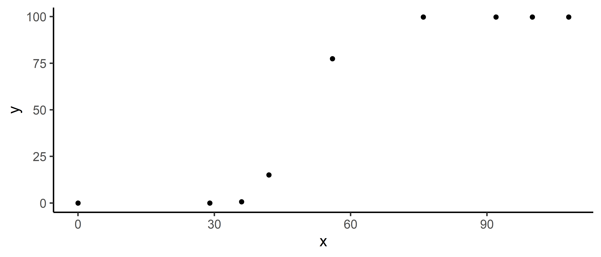

flexFitR is an R package designed for efficient modeling and analysis of large and complex datasets. It offers powerful tools for parameter estimation, model fitting, and visualization, leveraging the {optimx} package for optimization and the future package for parallel processing.
Installation
You can install the development version of flexFitR from GitHub with:
# install.packages("devtools")
devtools::install_github("AparicioJohan/flexFitR")Features
- Parameter Estimation: Utilizes
{optimx}and derivative-free algorithms to solve and estimate parameters for a given function. - Parallelization: Implements parallel processing using the future package, enabling efficient fitting of hundreds of curves simultaneously.
- Visualization Tools: Provides a variety of plots to visualize model fits, correlations, predictions, and more.
- Statistical Rigor: Offers standard errors and p-values for coefficients, as well as for predictions, supporting robust conclusions and interpretations.
- Prediction: Facilitates the prediction of non-observed data points.
- Flexibility: Allows users to fix certain parameters in the model and specify different initial values per grouping factor.
- Custom Modeling Functions: Equipped with built-in modeling functions for common analysis tasks, while also permitting users to supply their own custom functions.
Example
Here’s a simple example to get you started with flexFitR. This example demonstrates fitting a piecewise regression model:
library(flexFitR)
dt <- data.frame(
time = c(0, 29, 36, 42, 56, 76, 92, 100, 108),
variable = c(0, 0, 0.67, 15.11, 77.38, 99.81, 99.81, 99.81, 99.81)
)
plot(explorer(dt, time, variable), type = "xy")
fun <- function(t, t1 = 45, t2 = 80, k = 0.9) {
if (t < t1) {
y <- 0
} else if (t >= t1 && t <= t2) {
y <- k / (t2 - t1) * (t - t1)
} else {
y <- k
}
return(y)
}
# Fitting piecewise regression
mod_1 <- dt |>
modeler(
x = time,
y = variable,
fn = "fun",
parameters = c(t1 = 45, t2 = 80, k = 90)
)print(mod_1)
Call:
variable ~ fun(time, t1, t2, k)
Residuals:
Min. 1st Qu. Median Mean 3rd Qu. Max.
0.00000 0.00000 0.00000 0.07444 0.00000 0.67000
Optimization Results `head()`:
uid t1 t2 k sse
1 38.6 61 99.8 0.449
Metrics:
Groups Timing Convergence Iterations
1 0.3811 secs 100% 511 (id)
# Auto plot
plot(mod_1)
# Coefficients
coef(mod_1)
# A tibble: 3 × 6
uid coefficient solution std.error `t value` `Pr(>|t|)`
<dbl> <chr> <dbl> <dbl> <dbl> <dbl>
1 1 t1 38.6 0.0779 496. 4.54e-15
2 1 t2 61.0 0.0918 665. 7.82e-16
3 1 k 99.8 0.137 730. 4.47e-16Documentation
For detailed documentation and examples, visit flexFitR
- Vignette 1: How to start
- Vignette 2: Modeling Canopy
- Vignette 3: Modeling Plant Height
- Vignette 4: Modeling VIs
- Vignette 4: Plotting Options
Contributing
Contributions to flexFitR are welcome! If you’d like to contribute, please fork the repository and submit a pull request. For significant changes, please open an issue first to discuss your ideas.
Code of Conduct
Please note that the flexFitR project is released with a Contributor Code of Conduct. By contributing to this project, you agree to abide by its terms.
License
flexFitR is licensed under the MIT License. See the LICENSE file for more details.